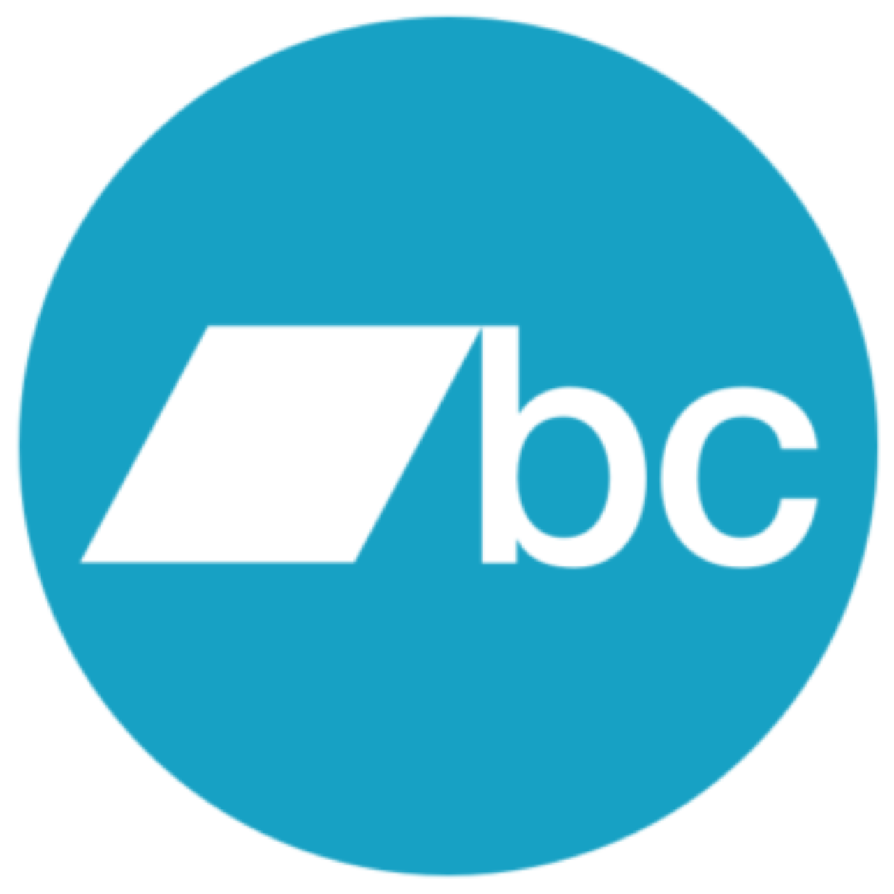

Méthodologie Certification IMC
Les règles officielles de calcul et d'attribution des certifications musicales de l'Institut Musical Congolais.
Unités de mesure IMC
L’Institut Musical Congolais utilise deux unités principales pour mesurer les performances musicales : les IES et les IEV.
IEU — IMC Équivalents Streams
Stream Premium
1 stream = 5 IES
Stream Freemium
1 stream = 1 IES
Vente Album
1 vente = 7.500 IES
Vente Single
1 vente = 750 IES
IEV — IMC Équivalents Ventes
Les IEV permettent de déterminer les certifications albums après conversion des IES générés.
Conversion
1 IEV = 1.500 IES
Certifications Albums
🥇 Or
5.000 IEV
💿 Platine
10.000 IEV
💿💿 Multi Platine
20.000 IEV...
💎 Diamant
50.000 IEV
💎💎 Multi Diamant
100.000 IEV...
Certifications Singles
🥇 Or
2.500.000 IES
💿 Platine
5.000.000 IES
💎 Diamant
8.500.000 IES
💎💎 Multi Diamant
17.000.000 IES...
Plateformes prises en compte

Spotify

Audiomack
Apple Music

Boomplay

iTunes

Amazon Music

Bandcamp

MD Music RDC
Règles générales IMC
- Tous les artistes sont éligibles aux certifications IMC.
- Seules les performances réalisées en République Démocratique du Congo sont comptabilisées.
- Les données utilisées proviennent uniquement des plateformes reconnues par l’IMC.
Règle spécifique aux albums
Lorsqu’un album est analysé, si la chanson la plus consommée représente plus de la moitié des IES générés par l’ensemble de l’album, une partie des IES de cette chanson est retirée du calcul afin de garantir une évaluation équitable.
Nombre d’IEV = Nombre d’IES ÷ 1.500
Documents et preuves nécessaires
Toute demande de certification doit être accompagnée d’éléments permettant de vérifier les performances déclarées.
Document principal
Attestation de sortie, document fourni par le label ou tout élément permettant d’identifier clairement l’œuvre.
Dossier de preuves obligatoire
Un lien vers un dossier Google Drive, Dropbox ou OneDrive doit être fourni dans le formulaire de demande.
Les preuves acceptées comprennent notamment :
- Captures d'écran des statistiques des plateformes.
- Rapports officiels des plateformes ou distributeurs.
- Données de consommation disponibles.
- Liens directs vers les œuvres.